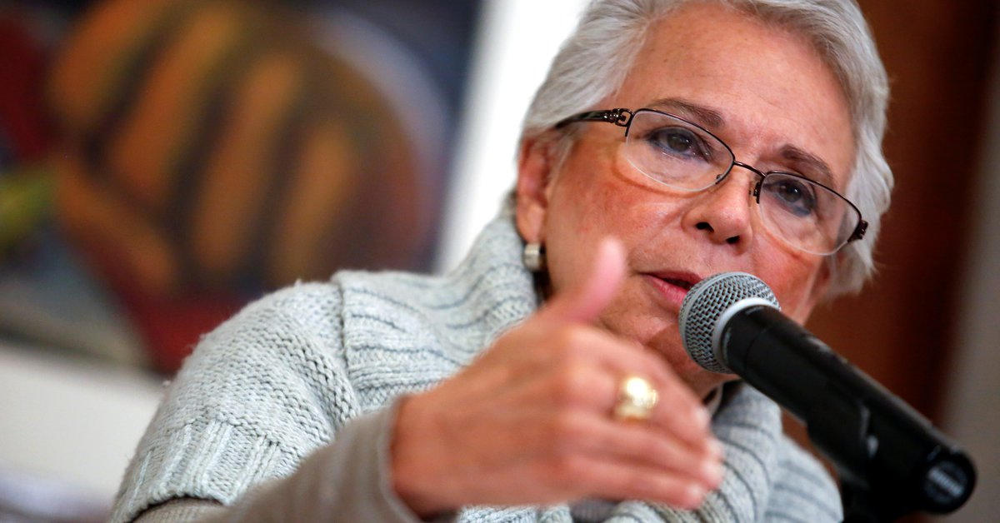
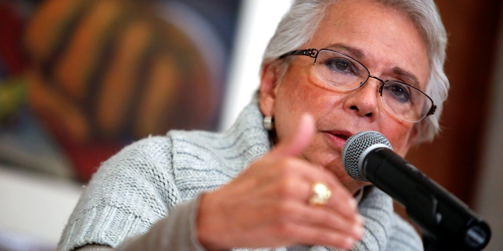
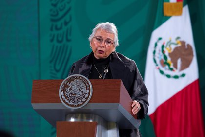
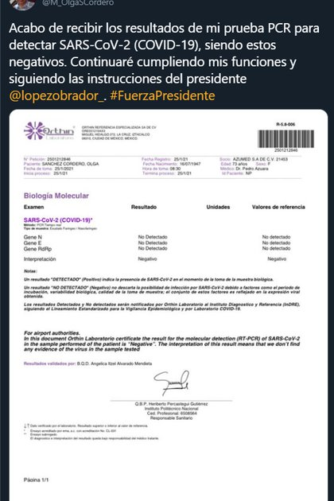
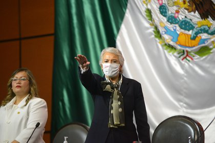
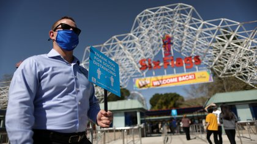
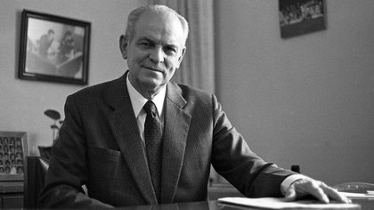
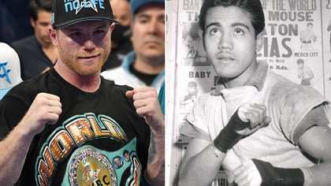

Olga Sánchez Cordero no tiene COVID-19: mostró los resultados de su prueba PCR

La salud de Olga Sánchez Cordero había preocupado tras el positivo del presidente a COVID-19 (REUTERS)
Un examen de PCR elaborado por 'Laboratorio Orthin' indica que la secretaria de Gobernación, Olga Sánchez Cordero, no padece de Covid-19.Dicho estudio fue tomado a las 8.30 del día de hoy 25 de enero.
La secretaria de Gobernación compartió una imagen de los resultados del examen a través de su cuenta de Twitter con el siguiente mensaje: 'Acabo de recibir los resultados de mi prueba PCR para detectar SARS-CoV-2 (COVID-19), siendo estos negativos.Continuaré cumpliendo mis funciones y siguiendo las instrucciones del presidente'.
Olga Sánchez Cordero se realizó la prueba a manera de protocolo después de que se hiciera público que el presidente de México, Andrés Manuel López Obrador, había contraído el nuevo y mortífero virus.
La secretaria de Gobernación también ha informado que, aunque el presidente se encuentra en cuarentena aislado de terceros, 'se encuentra en pleno ejercicio de sus funciones como presidente de la República'.El día lunes 25 de enero López Obrador dio a conocer a través de sus redes sociales que entabló una conversación con Vladimir Putin, presidente de Rusia, quien acordó enviar 24 millones dosis de la vacuna Sputnik V, durante los dos siguientes meses.
Mientras el presidente continúe convaleciente y pueda contagiar a terceros de este patógeno, la Secretaria de Gobernación tomará su lugar encabezando la regular conferencia matutina.Esta será la única responsabilidad presidencial que será, provisionalmente desempeñada por Sánchez Cordero.
Asimismo, ha reiterado que los síntomas del mandatario son 'leves', por lo cual se espera que se recupere rápidamente y regrese a desempeñar sus actividades cotidianas como jefe de Gobierno.

Un examen de PCR indica que Olga Sánchez Cordero, no padece de Covid-19 (Foto: Twitter@M_OlgaSCordero)
La secretaría de Gobernación se reunió con el presidente el pasado sábado 23 de diciembre.El mandatario había estado en contacto en los últimos días con otras personas relevantes en la vida pública nacional como Jaime Rodríguez y Juan Manuel Carreras, gobernadores de Nuevo León y San Luis Potosí, respectivamente.Otros contactos recientes fueron con personal de su gabinete como Marcelo Ebrard, secretario de Relaciones Exteriores, y Tatiana Clouthier, Secretaría de Economía.
Dichos miembros del gabinete han informado que por precaución permanecerán unos días aislados y se realizarán la prueba de PCR necesaria para conocer, con certeza, si han sido contagiados de Coronavirus.
El primero de los integrantes del círculo de personas cercano a López Obrador en dar positivo a la prueba de Covid-19 fue Jesús Ramírez Cuevas, Coordinador General de Comunicación Social de presidencia.

La secretaría de Gobernación se reunió con el presidente el pasado sábado 23 de diciembre (Foto: Cámara de Diputados)
Beatriz Gutiérrez Müller, académica de la Benemérita Universidad Autónoma de Puebla (BUAM) y esposa del presidente también ha dado negativo a la prueba de SARS-COV-2.
El protocolo sanitario con el que se pretende mitigar este brote de Covid-19 en los círculos cercanos a presidencia han sido instaurado por Jorge Alcocer, secretario de Salud.
Mencionado protocolo consiste básicamente en estas cuatro precauciones: 1) Mantener dos metros de sana distancia en las reuniones presenciales; 2) sanitización de los espacios en donde se llevan a cabo los encuentros; 3) Pruebas para detectar Covid-19 cada 15 días en el grupo de individuos más cercano al mandatario y; 4) quienes manifiesten algún síntoma que sea indicativo de enfermedades respiratorias deberán reportarlo y no presentase en las reuniones.
Secretario de Salud también encabeza a un grupo multidisciplinario integrado por médicos especializados en inmunología e infectología que están al pendiente del estado de salud del presidente López Obrador.
MÁS SOBRE ESTE TEMA:
Posted On: 2021-01-25T00:00:00





Content Date: 2021-01-25
Download Date: 2021-05-13
Document ID: L0C04C9EF